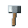
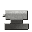

Tier 3–4 — Steam, Coke & Steel¶
94 recipes
Bessemer Converter 1
The Bessemer blow forces cold air through liquid pig iron from tuyeres at the converter base. Oxygen in the air burns out carbon, silicon, and manganese in a violent 15-20 minute exothermic reaction -- the heat released is so intense that no external fuel is needed after ignition. Carbon drops from ~4% to ~0.2-0.5%, producing steel. The blow must be stopped at the right carbon level; over-blowing produces wrought iron, under-blowing leaves cast iron.
t2_bessemer_steelBlast Furnace 1
The blast furnace drives a continuous reduction column: coke burns to CO at tuyere level (~1600 degC), CO reduces Fe2O3 to iron as the burden descends, and limestone flux (CaO after calcination) reacts with gangue silica to form liquid slag (CaSiO3) that floats above liquid pig iron. Pig iron absorbs ~4% C from coke -- it is hard but brittle. The slag must be tapped separately from the iron notch.
t2_blast_furnace_pig_ironClay Casting Pit 1
Station: clay casting pit
itemdb_firebox_cast_iron_clay_casting_pitClay Crucible 2
tier=2;material=bronze • Station: clay crucible (small)
itemdb_bronze_tool_blank_clay_crucible_smallStation: clay crucible (small) • Byproduct: slag
itemdb_copper_ingot_refined_clay_crucible_smallEarthen Kiln 8
Station: earthen kiln (updraft)
itemdb_carbon_filament_preform_earthen_kiln_updraftStation: earthen kiln (updraft)
itemdb_clay_casting_pit_earthen_kiln_updraftStation: earthen kiln (updraft)
itemdb_clay_crucible_small_earthen_kiln_updraftStation: earthen kiln (updraft)
itemdb_fireclay_refractory_earthen_kiln_updraftStation: earthen kiln (updraft)
itemdb_lamp_socket_porcelain_earthen_kiln_updraftStation: earthen kiln (updraft)
itemdb_porcelain_insulator_pin_earthen_kiln_updraftStation: earthen kiln (updraft)
itemdb_refractory_brick_fireclay_earthen_kiln_updraftStation: earthen kiln (updraft)
itemdb_refractory_brick_silica_earthen_kiln_updraftElectric Arc Furnace 3
Melt the pure cathode sheets under a charcoal blanket that keeps air off the metal, then cast oxygen-free refined ingot. Keeping oxygen out matters: gassy copper turns brittle and conducts worse, so the charcoal cover is not optional for electrical-grade stock.
copper_cathode_remelt_refinedFoil left over from stamping and cladding is thin and oxidizes fast, so it is bundled and melted back under charcoal into clean ingot rather than thrown away. Copper is worth too much to scrap.
copper_foil_scrap_remeltMachining swarf and grinding dust are swept up, pressed into a briquette, and melted back under charcoal into ingot. Loose copper powder burns and scatters, so compacting it first keeps the metal out of the slag.
copper_dust_swarf_remeltEngine Lathe 4
TB turned bronze bearing×2
turned bronze bearing×2
Bore and turn the sleeve to a precise sliding fit in one setup. Quick, repeatable, and clean enough that one ingot yields two bearings instead of half of it ending up as scrapings.
lathe_bronze_bearing_machinedPull the round rod through a series of shrinking holes in a draw plate until it thins into wire. Each pass squeezes it smaller, so one rod gives a long run of wire. This is the standard way bar stock becomes the wire that windings and contacts need.
copper_rod_draw_wireSL steel lead screw×1
steel lead screw×1
The lathe's own lead screw and change gears drive the tool along at a fixed rate, cutting a perfectly even thread by itself. This is the whole reason the screw-cutting lathe was such a leap: it turns the hardest hand job into a routine one.
lathe_lead_screw_machinedClamp the bar between the lathe centres and let the tool peel it down to an exact, smooth diameter in one setup. Far faster than hand-filing and it wastes almost no metal, so one ingot gives two shafts. This is what machined means: cheaper and quicker than the same part made by hand.
lathe_steel_shaft_machinedFire-Refining Furnace 1
Remelt cathode under charcoal cover and cast oxygen-free refined ingot for wire and electronics.
cu_cathode_remeltGathered from the world 1
energyAmount=8000,energyUnit=kJ,formula=C,chemName=Bituminous Coal,obtain=coal_seam_node • ★ FLOOR PICKUP ITEM ★ -- coal_seam_node
world_coal_bituminousGlass Bench 3
Silica is fluxed with borax and melted in the lampworking burner flame, then drawn by hand into tube stock. The resulting borosilicate composition tolerates rapid thermal cycling without cracking.
t3_glass_tubeBG borosilicate glass tube×1 CF
borosilicate glass tube×1 CF carbon filament preform×1 IC
carbon filament preform×1 IC insulated copper wire×1 → IL
insulated copper wire×1 → IL incandescent lamp (carbon)×2
incandescent lamp (carbon)×2
Glass tube is collapsed over the filament mount, the air evacuated, and the stem sealed with a gas flame. Using pre-drawn tube stock is faster than blowing a bulb from scratch and gives consistent wall thickness.
t3_glass_lamp_bulbplaceModel=incandescent_lamp_carbon • Station: glass bench
itemdb_incandescent_lamp_carbon_glass_benchIron Anvil 18
placeModel=belt_pulley_iron,station=true,transport=shaft • Station: iron anvil block
itemdb_belt_pulley_iron_iron_anvil_blockTBturned bronze bearing×1
Cast a rough bronze sleeve, then hand-scrape the bore little by little until a shaft just slides through. A skilled hand can get a good fit, but it is slow and wastes metal as scrapings.
anvil_bronze_bearing_manualStation: iron anvil block
itemdb_connecting_rod_wrought_iron_anvil_blockStation: iron anvil block
itemdb_crank_iron_forged_iron_anvil_blockStation: iron anvil block
itemdb_flyball_governor_iron_anvil_blockStation: iron anvil block
itemdb_iron_plate_hand_iron_anvil_blockStation: iron anvil block
itemdb_iron_rivet_hand_iron_anvil_blockStation: iron anvil block
itemdb_iron_rod_wrought_iron_anvil_blockStation: iron anvil block
itemdb_iron_strap_iron_anvil_blockStation: iron anvil block
itemdb_iron_tool_blank_iron_anvil_blockStation: iron anvil block
itemdb_magnet_core_wrought_iron_anvil_blockStation: iron anvil block
itemdb_safety_valve_weighted_iron_anvil_blockStation: iron anvil block
itemdb_steam_cylinder_cast_iron_iron_anvil_blockWI wrought iron bar×2 IH
wrought iron bar×2 IH wrought-iron steam pipe×1 RO
wrought-iron steam pipe×1 RO rope×2 → SD
rope×2 → SD steam drill×1
steam drill×1

iron hammer head×1 WIplaceModel=steam_drill,station=true,station_input=1,station_output=2,station_fuel=0,transport=chute • Station: iron anvil block
itemdb_steam_drill_iron_anvil_blockStation: iron anvil block
itemdb_steam_piston_rod_iron_anvil_blockSLsteel lead screw×1
Before screw-cutting lathes, a long even thread was filed and chased into a bar by hand against a guide. It can be done, but it is painstaking and the thread is never quite uniform. Expect to spoil some steel getting one good screw.
anvil_lead_screw_manualStation: iron anvil block
itemdb_steel_rivet_iron_anvil_blockYou can make a shaft without a lathe: forge the bar round on the anvil, then file and grind it true by hand. It works, but it is slow and a lot of good steel ends up as filings on the floor -- which is why it takes two ingots to get one decent shaft this way.
anvil_steel_shaft_manualLever Press 1
Station: lever press
itemdb_flat_belt_leather_lever_pressOpen Hearth Furnace 1
Regenerative open-hearth process: incoming cold gas heats through a brick checker-work that was itself heated by the last exhaust stroke. The reversal cycle maintains furnace temperature while using far less fuel than a non-regenerative flame. Operator controls carbon content precisely -- Bessemer is faster but open-hearth produces more consistent structural steel grades.
t3_open_hearth_steelRiveted Boiler 1
Boil the water until pressure builds, then tap one puff of steam into a holding flask. Water goes in the input slot, charcoal in the fuel slot.
e5_boil_steam_chargeSteam Machine Shop 11
Station: machine shop (steam)
itemdb_armature_core_laminated_machine_shop_steamStation: machine shop (steam)
itemdb_commutator_copper_segmented_machine_shop_steamTS turned steel shaft×1 DC
turned steel shaft×1 DC drawn copper wire×1 WI
drawn copper wire×1 WI wrought-iron magnet core×1 → DD
wrought-iron magnet core×1 → DD DC dynamo (workshop)×1
DC dynamo (workshop)×1
Station: machine shop (steam)
itemdb_dynamo_dc_workshop_machine_shop_steamTSturned steel shaft×1 ICinsulated copper wire×1 WIwrought-iron magnet core×1 SN sintered NdFeB magnet×1 → SD
sintered NdFeB magnet×1 → SD small DC motor×1
small DC motor×1
Station: machine shop (steam)
itemdb_electric_motor_small_dc_machine_shop_steamplaceModel=glass_bench • Station: machine shop (steam)
itemdb_glass_bench_machine_shop_steamRS rolled steel plate×1 TSturned steel shaft×1 PB
rolled steel plate×1 TSturned steel shaft×1 PB plain bearing (wood)×1 → EL
plain bearing (wood)×1 → EL engine lathe (workshop)×1
engine lathe (workshop)×1
Station: machine shop (steam)
itemdb_lathe_workshop_machine_shop_steamplaceModel=machine_shop_electric • Station: machine shop (steam)
itemdb_machine_shop_electric_machine_shop_steamStation: machine shop (steam)
itemdb_rolling_mill_steam_machine_shop_steamSC steam cylinder (cast iron)×1 HI
steam cylinder (cast iron)×1 HI hammered iron plate×3 HF
hammered iron plate×3 HF hand-forged iron rivet×16 → SDsteam drill×1
hand-forged iron rivet×16 → SDsteam drill×1
Mount a cast-iron steam cylinder on a riveted iron frame so its piston hammers a drill rod against the rock face. Bolt it together at a steam machine shop; once placed it feeds on the boiler's steam to chew into ore that SteamDrillService tracks. This is the build route the drill was missing -- before this it could only be placed by service, never legitimately obtained.
steam_drill_assembleStation: machine shop (steam)
itemdb_steel_shaft_machine_shop_steamStation: machine shop (steam)
itemdb_wire_drawing_bench_machine_shop_steamSteam Rolling Mill 5
Station: rolling mill (steam)
itemdb_steel_angle_bar_rolling_mill_steamUniversal H-beam section rolled from steel billets. Structurally superior to wrought-iron box girders for the same mass -- flanges carry bending load, web carries shear.
t3_roll_steel_beamStation: rolling mill (steam)
itemdb_steel_gusset_plate_rolling_mill_steamSteel ingots are passed between hardened rolls under full steam pressure. The rolling action reduces cross-section, work-hardens the surface, and aligns the grain for better tensile properties.
t3_roll_steel_plateHot pig iron rolled through a profiled rail die. The I-section profile distributes wheel load across the foot and head; air-cooling after rolling relieves thermal stress.
t3_roll_steel_railTrip Hammer 2
Blast furnace slag contains 0.5-1.5% trapped iron particles and glassy silicate phases. Crushing liberates the iron granules for magnetic or gravity separation in later tiers. The silicate fines become tailings; the iron-rich fraction can be re-fed to the blast furnace at small loss.
t2_slag_reprocessformula=CaCO3,chemName=Limestone,elements=Ca:1|C:1|O:3 • Station: stamp mill (manual trip hammer) • Byproduct: burned_lime_quicklime
itemdb_limestone_flux_stamp_mill_manual_trip_hammerWire Drawing Bench 3
Pull annealed copper rod through a series of progressively smaller dies to draw it down into wire. Each pass work-hardens the metal, so it is annealed between draws to keep it ductile.
t3_draw_copper_wireRefined copper rod is pulled through progressively smaller draw-plate holes by a hand capstan. Each pass reduces cross-section by 20-30% and work-hardens the wire; anneal between stages to restore ductility.
t3_draw_copper_wire__1Station: wire-drawing bench
itemdb_copper_wire_drawn_wire_drawing_benchWorkbench 27
Station: workbench
itemdb_beam_frame_wrought_workbenchStation: workbench
itemdb_bessemer_converter_basic_workbenchFR fireclay refractory brick×1 FI
fireclay refractory brick×1 FI fieldstone×1 CF
fieldstone×1 CF coke fuel×1 LN
coke fuel×1 LN limestone nodule×1 → SB
limestone nodule×1 → SB small blast furnace×1
small blast furnace×1
Station: workbench
itemdb_blast_furnace_small_workbenchStation: workbench
itemdb_boiler_lagging_mat_workbenchCurve four hammered wrought-iron plates over a form and lap their edges, then drive hot rivets through the overlaps and hammer them flat. As each rivet cools it shrinks and clamps the seam, giving a shell that holds low-pressure steam. This is the plate-by-plate way a riveted boiler is actually built.
boiler_shell_rivet_constructplaceModel=boiler_shell_riveted,station=true,station_input=1,station_fuel=1,station_output=2,transport=chute • Station: workbench
itemdb_boiler_shell_riveted_workbenchStation: workbench
itemdb_brush_block_carbon_workbenchStation: workbench
itemdb_bus_bar_copper_workbenchStation: workbench
itemdb_coke_oven_beehive_workbenchStation: workbench
itemdb_condenser_jet_workbenchStation: workbench
itemdb_cooling_tank_wooden_workbenchStation: workbench
itemdb_copper_wire_insulated_workbenchStation: workbench
itemdb_feedwater_pump_simple_workbenchRS riveted steel frame×1
riveted steel frame×1
Stand two rolled beams as columns, brace them with steel angle, and join every connection with hot driven rivets. The finished bent carries engine-house roofs, mill floors, and the bearings for overhead line shafts. Riveted steel framing like this held up the first multi-story factories.
frame_steel_rivet_assembleStation: workbench
itemdb_fuse_rewireable_workbenchStation: workbench
itemdb_gland_packing_steam_workbenchStation: workbench
itemdb_hot_blast_stove_workbenchStation: workbench
itemdb_knife_switch_heavy_workbenchRSrolled steel plate×1 ILincandescent lamp (carbon)×1 PL porcelain lamp socket×1 → IL
porcelain lamp socket×1 → IL industrial lamp fixture×1
industrial lamp fixture×1
placeModel=lamp_fixture_industrial • Station: workbench
itemdb_lamp_fixture_industrial_workbenchplaceModel=line_shaft_wrought,station=true,transport=shaft • Station: workbench
itemdb_line_shaft_wrought_workbenchRS rolled steel beam×1 WI
rolled steel beam×1 WI wrought-iron line shaft×1 IA
wrought-iron line shaft×1 IA machine shop (steam)×1
machine shop (steam)×1

iron anvil block×1 → MSStation: workbench
itemdb_machine_shop_steam_workbenchStation: workbench
itemdb_open_hearth_furnace_basic_workbenchSCsteam cylinder (cast iron)×1 SP steam piston and rod×1 FL
steam piston and rod×1 FL flywheel×1 BF
flywheel×1 BF beam frame×1 WI
beam frame×1 WI wrought-iron connecting rod×1 SG
wrought-iron connecting rod×1 SG steam gland packing×1 WS
steam gland packing×1 WS weighted safety valve×1 → SB
weighted safety valve×1 → SB simple beam engine×1
simple beam engine×1
Station: workbench
itemdb_steam_engine_simple_workbenchStation: workbench
itemdb_steam_pipe_wrought_workbenchplaceModel=switchboard_panel_wooden • Station: workbench
itemdb_switchboard_panel_wooden_workbenchRT railed track section×1
railed track section×1
Station: workbench
itemdb_track_section_railed_workbenchStation: workbench
itemdb_wood_pole_power_workbench